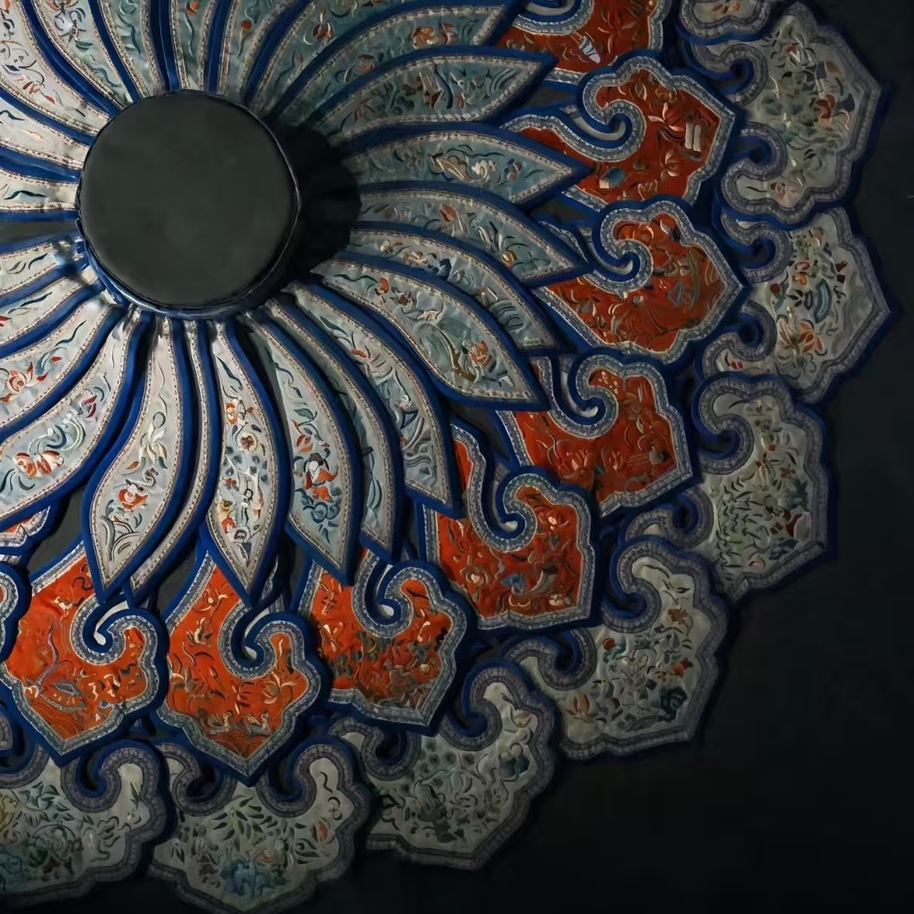

中国传统服饰配饰 · 省级非物质文化遗产

云肩是中国传统服饰中的肩部装饰，因造型如云朵而得名。云肩以丝绸为底，采用刺绣、珠绣、盘金等工艺制作，图案精美、色彩华丽，是中国古代女性服饰中最重要的配饰之一，也是中国传统服饰文化的瑰宝。
云肩集刺绣、珠绣、盘金等多种工艺于一身，是古代女子服饰中工艺最繁复、审美最高雅的配饰之一。云肩的形制多样，有"四合如意""八方吉祥"等寓意深远的造型，每一件云肩都是一件精美的艺术品。
云肩起源于汉代，最初为贵族女性的服饰配饰。唐宋时期云肩成为贵族女性常服的一部分，工艺日趋精美。元代云肩传入民间，成为婚嫁礼服的重要配饰。明清时期云肩制作技艺达到鼎盛，出现了"四合一""六合一""八合一"等多种形制，在民间广泛流行。
云肩在传统婚嫁文化中占有重要地位，新娘出嫁时必佩戴云肩，象征吉祥如意、婚姻美满。2008年，云肩制作技艺被列入省级非物质文化遗产名录。
云肩上的刺绣图案丰富多彩，每一种图案都承载着深厚的文化寓意：